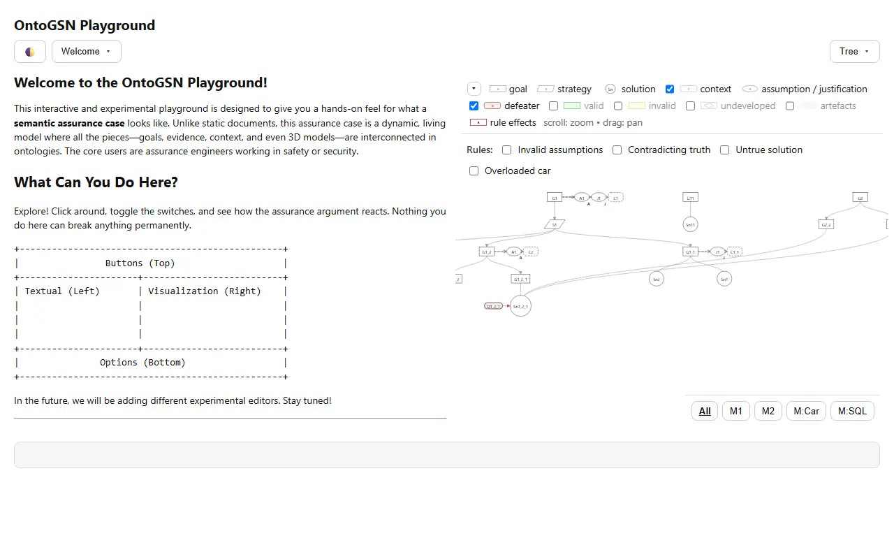
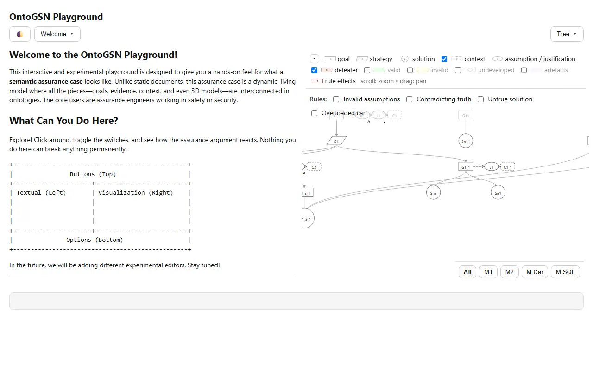
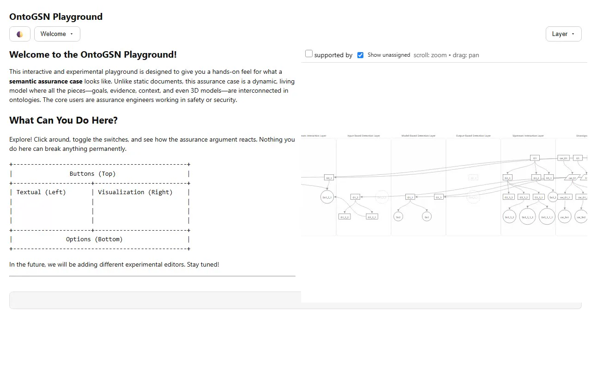
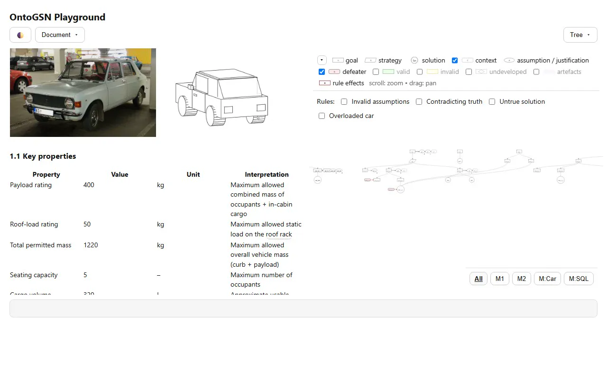
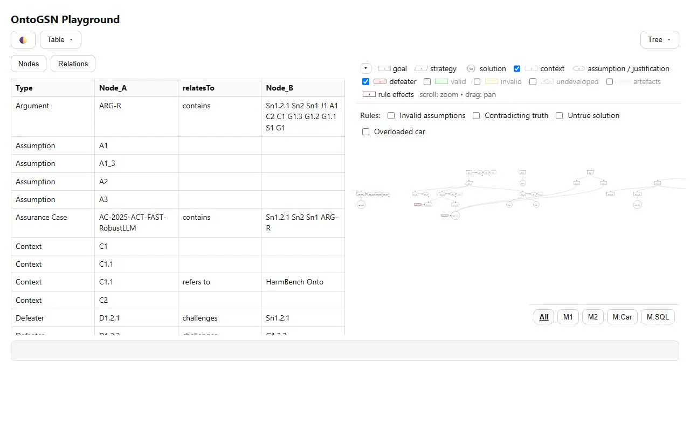
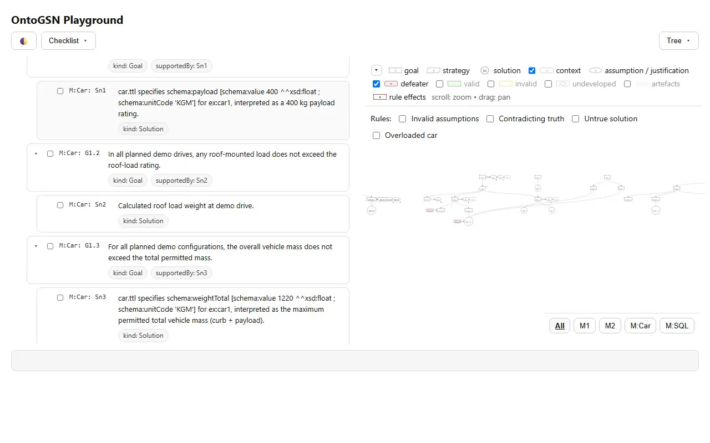
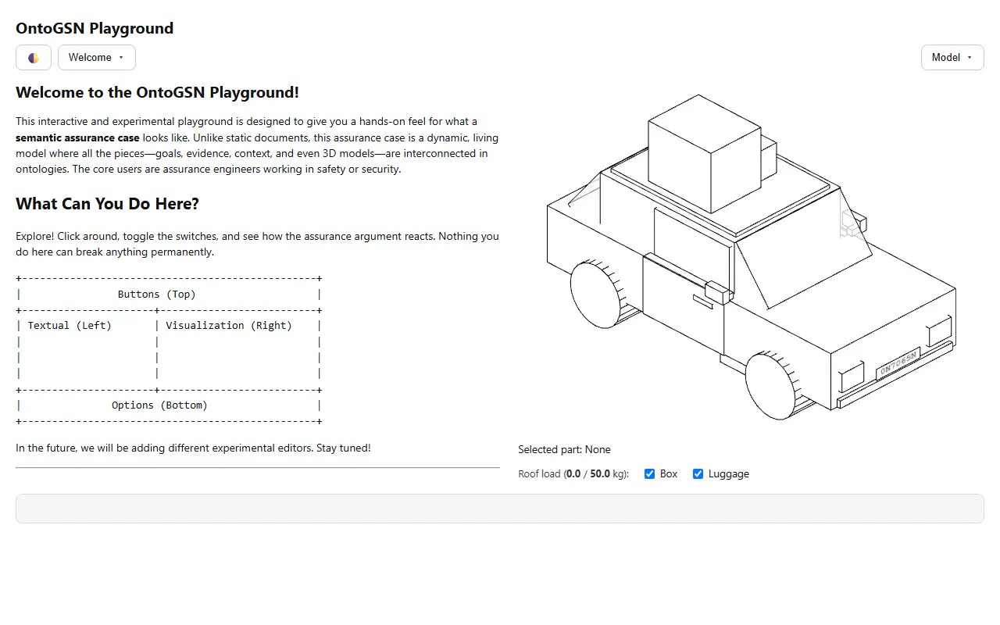

Eine client-seitige Workbench, die GSN-v3-Assurance-Cases als lebendiges, semantisches Netz behandelt — gleichzeitig als interaktiver Graph, 3D-Modell, Dokument und Tabelle, getrieben von einem RDF-Triple-Store direkt im Browser.
7 aufgezeichnete Szenarien · zum Vergrößern anklicken

Der Einstieg: ein Begrüßungstext links, der GSN-Graph rechts — beide aus demselben Ontologie-Datensatz.

Das Assurance-Argument als interaktiver D3.js-Graph — Ziele, Strategien und Belege mit ihren Beziehungen.

Eine alternative Swimlane-Darstellung ordnet die Knoten nach Ebene — nützlich, um den Argumentfluss zu lesen.

Ein Markdown-Bericht über den Demo-Wagen — Verweise wie $roof-rack werden direkt aus der Ontologie aufgelöst.

Dieselben Fakten als RDF-Tripel — direkt per SPARQL aus dem Triple-Store gelesen und in eine Tabelle gerendert.

Dasselbe Argument als Fortschrittsliste — jedes Ziel und jeder Beleg abhakbar, mit live gezähltem Stand.

Ein interaktives Three.js-Modell des OntoCar: Box und Gepäck anhaken, und ein SPARQL-UPDATE belädt das Dach in Echtzeit.
Die OntoGSN Workbench ist eine client-seitige Oberfläche zum Visualisieren, Erkunden und Erweitern von Assurance Cases in Goal Structuring Notation (GSN v3). Sie ist zugleich eine prototypische App für Anwender, die komplexe Argumente verstehen wollen, und ein offener Sandkasten für Entwickler, die Assurance Cases mit Domänen-Ontologien, Modellen, Dokumenten oder Code verknüpfen.
Im Kern lädt ein In-Browser-RDF-Triple-Store (Oxigraph, als WebAssembly) Ontologien aus Turtle-Dateien. Jede Ansicht entsteht aus SPARQL-Abfragen über denselben Datensatz: ein kraftgerichteter 2D-Graph (D3.js), ein 3D-Modell (Three.js), ein Markdown-Dokument, eine Tabelle und eine Checkliste — alle bleiben synchron.
Der GSN-Assurance-Case und die Domänen-Ontologien (z. B. das Auto-Modell) werden als Turtle-Dateien in den Oxigraph-Triple-Store im Browser geladen.
Ein Klick holt die passende SPARQL-Abfrage; SELECT liest den Graphen, UPDATE schreibt Änderungen zurück — etwa neue Belege oder Defeater.
Die Ergebnisse fließen in die gewählte Ansicht — Graph, 3D-Modell, Dokument, Tabelle oder Checkliste — und bleiben über denselben Datensatz konsistent.
Der Demo-Case argumentiert, dass der OntoCar innerhalb seiner statischen Lastgrenzen bleibt. Klicken Sie einen Knoten an, um seine Aussage zu sehen — oder lösen Sie den „Überladen“-Defeater aus, der das Dachlast-Ziel anficht.
Wählen Sie einen Knoten.
Vereinfachter Ausschnitt des Demo-Assurance-Case (OntoCar). Der echte Graph in der Workbench umfasst Kontexte, Annahmen und Justifikationen.
Eine Regel prüft die Dachlast. Übersteigt sie die Bewertung, fügt ein SPARQL-UPDATE einen Defeater hinzu, der das Ziel anficht.
Quellcode, eine gehostete Live-Version und das übergeordnete OntoGSN-Projekt.
Die vollständige client-seitige Workbench — HTML, JavaScript-Module, Ontologien und SPARQL-Abfragen.
github.com/Tomas-Bueno-Momcilovic/html_ontogsn_test → Live-DemoDie gehostete Workbench direkt im Browser ausprobieren — am besten am PC.
fortiss.github.io/OntoGSN/playground/ → ProjektDas ontologiebasierte Rahmenwerk für semantisches Management und Erweiterung von Assurance Cases.
fortiss.github.io/OntoGSN/ →